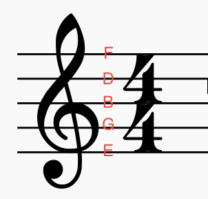
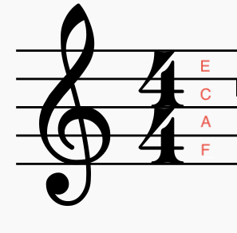
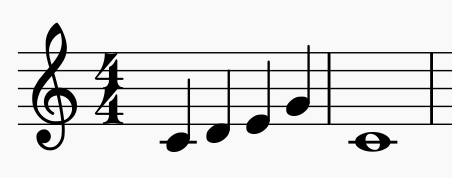
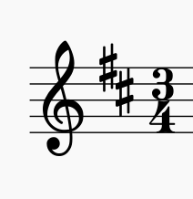

To understand scales it is firstly necessary to understand pitch. Musical notes can be higher or lower in pitch. This is indicated in written music by how high or low the note is written along the clef (lines). The note's pitch is named after a letter. However there are no letters in written music. You know the note's letter by its position on the lines. You can memorise the lines by remembering these expressions: "every good boy deserves fruit" for the lines and "FACE" for between the lines. Both of these start from the bottom.
 A melody is a series of notes that convey something to the listener. For example:
But how do we know which notes to include in the melody? This is where scales come into the picture. An easy definition of scales is that they are a group of notes that sound good together. If you walk up to a piano and start randomly pressing the keys it will not sound like music. Scales are how musicians select the notes in a way that sounds musical, to express themselves. Many instruments such as guitars and pianos have their frets or keys tuned to the chromatic scale. The chromatic scale consists of 12 pitches. These are:
| A | A sharp/B flat | B | C | C sharp/D flat | D | D sharp/E flat | E | F | F sharp/G flat | G | G sharp/A flat |
The distance between the notes of the chromatic scale are called semi tones. If you jump two notes along the
chromatic scale, for example from E to F#, this distance is called a tone. (Half steps and steps are what
Americans call semi tones and tones).
Most western music is based around the major scale or the
minor scale.
Very, very generally speaking the major scale sounds happy and the minor scale sounds sad. What notes are
part of the scale is determined firstly by a root note the scale starts from. Then there are six more notes
that are determined by a pattern that skips along, choosing notes from the chromatic scale.
The pattern of the major scale goes: root, tone, tone, semi-tone, tone, tone, tone, semi-tone, root (an octave
higher).
The table below shows the C major scale. The chromatic scale starts from the C and the
notes are selected according to the pattern.
| C | C sharp/D flat | D | D sharp/E flat | E | F | F sharp/G flat | G | G sharp/A flat | A | A sharp/B flat | B |
| tone> | tone> | semi tone> | tone> | tone> | tone> | semi tone> |
The table below shows the A major scale. The chromatic scale is starting from the A and the notes are being selected according to the pattern.
| A | A sharp/B flat | B | C | C sharp/D flat | D | D sharp/E flat | E | F | F sharp/G flat | G | G sharp/A flat |
| tone> | tone> | semi tone> | tone> | tone> | tone> | semi tone> |
The pattern of the minor scale goes: root, tone, semi-tone, tone, tone, semi-tone, tone, tone, root (an octave up). Below is the A minor scale. We are starting from A and working through the chromatic scale with the minor pattern.
| A | A sharp/B flat | B | C | C sharp/D flat | D | D sharp/E flat | E | F | F sharp/G flat | G | G sharp/A flat |
| tone> | semi tone> | tone> | tone> | semi tone> | tone> | tone> |
This is the F minor scale. We start from F and move through the chromatic scale according to the pattern:
| F | F sharp/G flat | G | G sharp/A flat | A | A sharp/B flat | B | C | C sharp/D flat | D | D sharp/E flat | E |
| tone> | semi tone> | tone> | tone> | semi tone> | tone> | tone> |
You might notice that some of major scales and minor scales have the same notes. For example G major has the
same notes as E minor (G, A, B, C, D, E, F#, G). This is called equivalent minor. If you look at the pattern
of tones and semi-tones from the sixth interval of the major scale you can see why this happens.
If a piece of music is based around the C major scale we say the piece is in the key of C. If the piece is
based around the A major scale we say it is in the key of A. If a piece is based around the E minor scale we
say the piece is in the key of E minor.
In written music the key is signified near the time signature by putting a sharp or flat over certain notes.
This tells the musician that the entire piece will have those notes sharp or flat, and from this you can tell the
key.
For example this key signature has one sharp. So it is the key of G or E minor.
This key signature has two sharps. From this we conclude it is in the key of D or B minor
Pentatonic scales: These are five note scales. These five notes are contained within the major scale and the minor
scale. The fourth and the seventh notes are removed. For example the C major pentatonic scale is C, D, E, G, A.
The F and B which are usually there are removed.
The distance between these two removed notes is called the tritone. The tritone has two notes clashing
in a very unmusical way. To avoid this sound the pentatonic removes these notes. In medieval Europe people actually though that
these notes played together sounded evil enough to summon the devil. This is also why centuries later Hendrix and
Sabbath played a lot of tritones.
The minor pentatonic has the same tritone removed as its equivalent major. For example A minor is the equivalent
minor of C major. As such the A minor pentatonic has the notes A, C, D, E, G. The F and B are also removed.